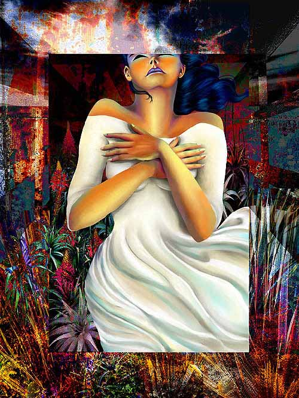

Ileana Frómeta Grillo
DIGITAL COLLAGE
Ileana writes, "The main figure in 'She Surrenders' was drawn directly in the computer with Painter 6.0.3. The final assembly of this collage was achieved with Photoshop 5.5, using a combination of digital pictures that were combined with the help of a number of Photoshop filters."
|
 |
The Art Lover's Guide to Digital Art
Click for JD Jarvis's main essay
This concludes Ileana Frómeta Grillo's exhibit.